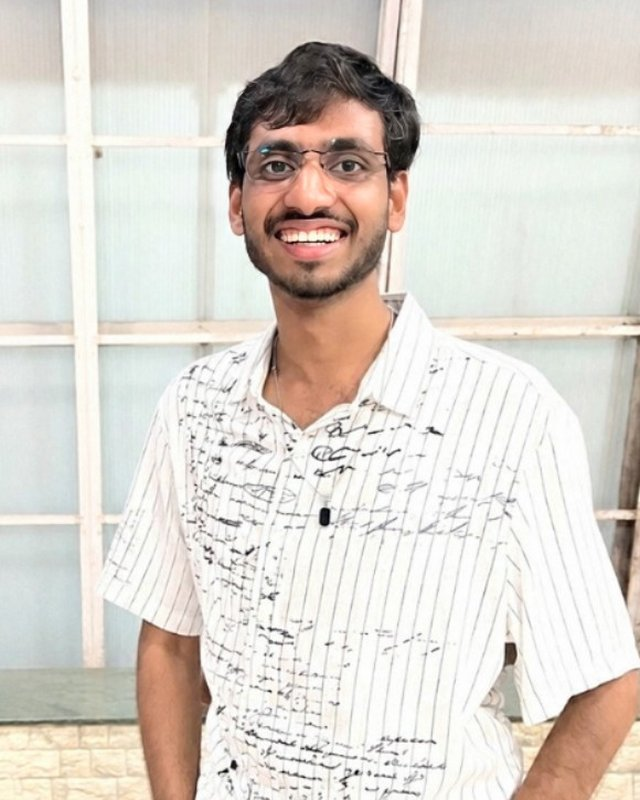

Simanta Nandi
MA, Digital Humanities & Social Sciences — IIT (ISM) DhanbadSimanta is an MA student in Digital Humanities & Social Sciences at IIT (ISM) Dhanbad. He completed the Summer Research Internship Programme 2026 at IIST Thiruvananthapuram, working on preserving cultural narratives, and holds a BA in Comparative Literature from Jadavpur University via CENTIL. He has taken part in the 15-Day UNESCO World Heritage Education Programme at Visva-Bharati and a British Library archival-digitisation workshop run with ILSR. His article, "Impact of Popular Culture and Media on Literary Reception in the Northeast of India," appears in Re-imagining Northeast Writing and Narratives: Language, Culture and Border Identities (Jamia Millia Islamia, 2024). His research interests span Digital Archiving, Cultural Heritage, AI for the Humanities, Electronic Literature and Digital Memory Studies. He was recognised by Oxford University Press India in 2021.
Disha Pramanik
MA, Digital Humanities & Social Sciences, IIT (ISM) Dhanbad · Course Coordinator, Centre for Folklore Studies and ResearchDisha Pramanik is a literature student and researcher passionate about Digital Humanities and interdisciplinary research. She holds a Bachelor's degree in English Literature from Midnapore College (Autonomous) and a Diploma in Travel and Tourism Management from the same institution. Later, she completed her Master's degree in Digital Humanities and Social Sciences from IIT (ISM) Dhanbad. She has also completed a research internship at IIT Kharagpur, where she worked on stylometric analysis. She is also a blog writer at the Historica Foundation and currently works as a Course Coordinator at the Centre for Folklore Studies and Research. She is also a team member of DH Nexus, contributing to initiatives in the field of Digital Humanities. Her research interests include Digital Humanities, Literary Studies, Digital Archiving, Feminist Writing, Gender Studies, and Cultural Preservation.
Portrait photographs supplied by the researchers themselves and used here with their consent. Everything else on this page — bios, affiliations and links — is maintained by the two of us; write to us via Contact with any correction.